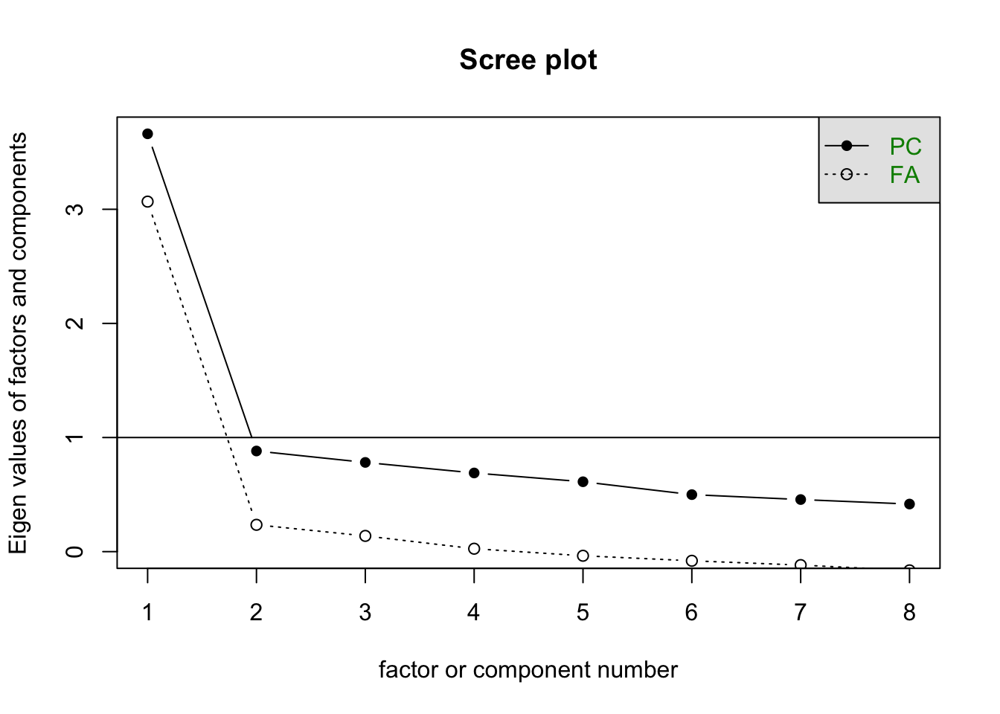

factor analysis probably isn’t appropriate for answering this question, but I am going to do it anyways. At the very least, it would be interesting to see if the parent risk variables have a similar structure as the kid ones. I will be following this tutorial to learn how to do factor analysis in R: https://bookdown.org/sz_psyc490/r4psychometics/factor-analysis.html but of course I will be applying this to my own data.
First I need to get my NLSY data loaded into here. Its already been cleaned and prepped in these scripts.
library(dplyr)## Warning: package 'dplyr' was built under R version 4.5.2##
## Attaching package: 'dplyr'## The following objects are masked from 'package:stats':
##
## filter, lag## The following objects are masked from 'package:base':
##
## intersect, setdiff, setequal, unionlibrary(psych)
library(lavaan)## This is lavaan 0.6-20
## lavaan is FREE software! Please report any bugs.##
## Attaching package: 'lavaan'## The following object is masked from 'package:psych':
##
## cor2covsource('~/Documents/Research/GitHub/risky_gambling/data/CBRandYBR/CBRandYBR.R')
source('~/Documents/Research/GitHub/risky_gambling/data/GeneralRisk79/GeneralRisk79.R')I am first going to do an EFA with the kid risk variables for one year - lets take 2010. This probably isnt enough items.
kidFA_2010 <- df_CRBandYRB %>% select(c("CRB1_2010","CRB2_2010","CRB3_2010","CRB4_2010","CRB5_2010", "CRB6_2010"))
#efa_1 <- factanal(x = kidFA_2010, factors = 1) this doesn't work This does not run because I have a lot of missingness, and this particular function I am using doesn’t like it. I’m going to be brave and do na.omit and see what happens. Good news! I still have 428 observations. I’m fine with these consequences.
bye <- na.omit(kidFA_2010)
efa_1 <- factanal(x = bye, factors = 1)
efa_1##
## Call:
## factanal(x = bye, factors = 1)
##
## Uniquenesses:
## CRB1_2010 CRB2_2010 CRB3_2010 CRB4_2010 CRB5_2010 CRB6_2010
## 0.932 0.848 0.972 0.373 0.722 0.512
##
## Loadings:
## Factor1
## CRB1_2010 0.260
## CRB2_2010 0.391
## CRB3_2010 0.169
## CRB4_2010 0.792
## CRB5_2010 0.528
## CRB6_2010 0.699
##
## Factor1
## SS loadings 1.642
## Proportion Var 0.274
##
## Test of the hypothesis that 1 factor is sufficient.
## The chi square statistic is 21.32 on 9 degrees of freedom.
## The p-value is 0.0113These results suggest that the one factor structure is OK, which is nice. CRB1 and CRB3 aren’t so good but I am ok with this. Next, I repeat with the parent risk. Does this also have a one-factor structure?
parentFA_2010 <- df_GeneralRisk79 %>% select(c("RDriving_2010","RFinancial_2010","ROccupation_2010","RHealth_2010","RTrust_2010","RRomantic_2010","RLifeChanges_2010","RBets_2010"))
bye_2 <- na.omit(parentFA_2010) #this one has 6,988 still, which is nice.
efa_2 <- factanal(x = bye_2, factors = 1)
efa_2##
## Call:
## factanal(x = bye_2, factors = 1)
##
## Uniquenesses:
## RDriving_2010 RFinancial_2010 ROccupation_2010 RHealth_2010
## 0.633 0.476 0.455 0.667
## RTrust_2010 RRomantic_2010 RLifeChanges_2010 RBets_2010
## 0.694 0.674 0.549 0.774
##
## Loadings:
## Factor1
## RDriving_2010 0.606
## RFinancial_2010 0.724
## ROccupation_2010 0.738
## RHealth_2010 0.577
## RTrust_2010 0.553
## RRomantic_2010 0.571
## RLifeChanges_2010 0.672
## RBets_2010 0.476
##
## Factor1
## SS loadings 3.078
## Proportion Var 0.385
##
## Test of the hypothesis that 1 factor is sufficient.
## The chi square statistic is 1102.36 on 20 degrees of freedom.
## The p-value is 5.55e-221efa_21 <- factanal(x = bye_2, factors = 2)
efa_21##
## Call:
## factanal(x = bye_2, factors = 2)
##
## Uniquenesses:
## RDriving_2010 RFinancial_2010 ROccupation_2010 RHealth_2010
## 0.390 0.489 0.472 0.580
## RTrust_2010 RRomantic_2010 RLifeChanges_2010 RBets_2010
## 0.684 0.648 0.466 0.767
##
## Loadings:
## Factor1 Factor2
## RDriving_2010 0.250 0.740
## RFinancial_2010 0.594 0.398
## ROccupation_2010 0.589 0.425
## RHealth_2010 0.305 0.572
## RTrust_2010 0.508 0.242
## RRomantic_2010 0.543 0.237
## RLifeChanges_2010 0.698 0.215
## RBets_2010 0.437 0.205
##
## Factor1 Factor2
## SS loadings 2.087 1.417
## Proportion Var 0.261 0.177
## Cumulative Var 0.261 0.438
##
## Test of the hypothesis that 2 factors are sufficient.
## The chi square statistic is 442.91 on 13 degrees of freedom.
## The p-value is 1.88e-86In a shocking turn of events, the one factor structure also looks fine. Cool. At least among these few types of risk taking items, they are maybe capturing the same thing. I wish that the kids and parents answered the same items, so you could see if the structure differs by age cohort - is the nature of different types of risk taking something that varies by age group?
I learned you can use the Lavaan package to do this with SEM, which is another way to get around the missingness issue, but it wants me to propose a structure, which I didn’t have before. Now though, I am going to give it a go. I am using this tutorial to help me figure out how to apply it to my own variables: https://lavaan.ugent.be/tutorial/efa.html
#not SEM
efa.model <- 'efa("efa")*f1 =~ RDriving_2010 + RFinancial_2010 + ROccupation_2010 + RHealth_2010 + RTrust_2010 + RRomantic_2010 + RLifeChanges_2010 + RBets_2010'
fit <- cfa(efa.model, data = parentFA_2010)
summary(fit, standardized = TRUE)## lavaan 0.6-20 ended normally after 1 iteration
##
## Estimator ML
## Optimization method NLMINB
## Number of model parameters 16
##
## Rotation method GEOMIN OBLIQUE
## Geomin epsilon 0.001
## Rotation algorithm (rstarts) GPA (30)
## Standardized metric TRUE
## Row weights None
##
## Used Total
## Number of observations 6988 12686
##
## Model Test User Model:
##
## Test statistic 1103.176
## Degrees of freedom 20
## P-value (Chi-square) 0.000
##
## Parameter Estimates:
##
## Standard errors Standard
## Information Expected
## Information saturated (h1) model Structured
##
## Latent Variables:
## Estimate Std.Err z-value P(>|z|) Std.lv Std.all
## f1 =~ efa
## RDriving_2010 1.788 0.035 51.763 0.000 1.788 0.606
## RFinancil_2010 1.985 0.031 65.029 0.000 1.985 0.724
## ROccupatn_2010 2.380 0.036 66.764 0.000 2.380 0.738
## RHealth_2010 1.651 0.034 48.754 0.000 1.651 0.577
## RTrust_2010 1.583 0.034 46.368 0.000 1.583 0.553
## RRomantic_2010 1.925 0.040 48.192 0.000 1.925 0.571
## RLifChngs_2010 1.960 0.033 58.943 0.000 1.960 0.672
## RBets_2010 1.536 0.039 38.952 0.000 1.536 0.476
##
## Variances:
## Estimate Std.Err z-value P(>|z|) Std.lv Std.all
## .RDriving_2010 5.515 0.105 52.713 0.000 5.515 0.633
## .RFinancil_2010 3.579 0.076 46.879 0.000 3.579 0.476
## .ROccupatn_2010 4.731 0.103 45.803 0.000 4.731 0.455
## .RHealth_2010 5.467 0.102 53.619 0.000 5.467 0.667
## .RTrust_2010 5.685 0.105 54.260 0.000 5.685 0.694
## .RRomantic_2010 7.653 0.142 53.775 0.000 7.653 0.674
## .RLifChngs_2010 4.678 0.094 50.005 0.000 4.678 0.549
## .RBets_2010 8.062 0.144 55.897 0.000 8.062 0.774
## f1 1.000 1.000 1.000The new tutorial I tried out that has the ESEM stuff showed me a different function to use, so the missingness is less of a problem! yey. It looks like this efa function just used the complete cases, so the sample ends up being the same as the na.omit route, but I don’t have to to the deletion, which I like.
Its also interesting to see that the factor loadings are strong (st.all I think) but the model fit is significant, which is no bueno in this context? Heres the scree plot:
scree(parentFA_2010)
This is a one factor structure all right - which my scale is only 8 items so its not that surprising - not that many possible options. However, risk taking in romantic relationships versus driving versus gambling seem like they could be different. Therefore, I am entertained by this.Now that I have it a little more figured it out, I am going to add in a little more complexity. I want to take individuals scores on the variables when they were 12, and those are the scale years that will go into the FA. Not sure if its possible but it would make the most sense to be doing the analysis in such a way that ages are a little more consistent